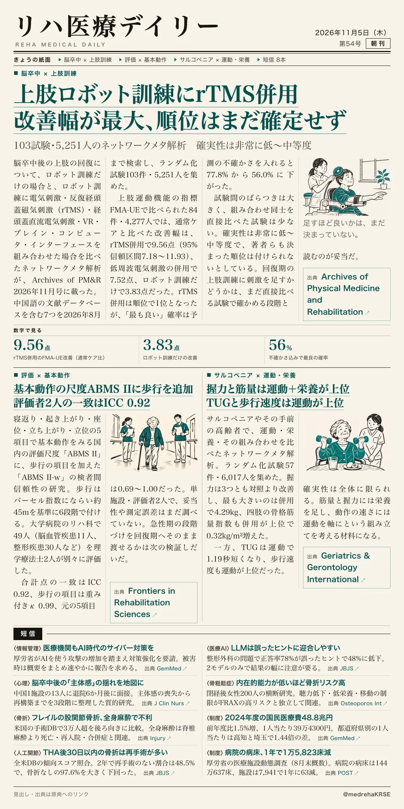
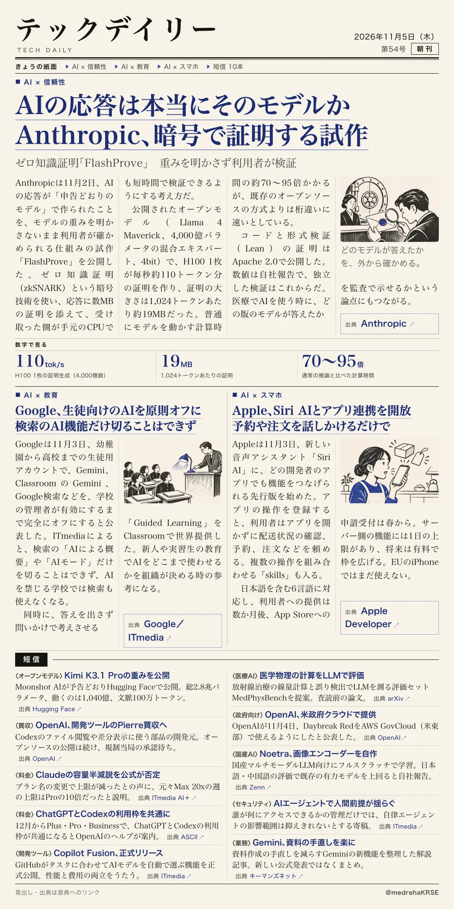

リハ医療デイリー
上肢ロボット訓練にrTMS併用 改善幅が最大、順位はまだ確定せず
103試験・5,251人のネットワークメタ解析 確実性は非常に低〜中等度
刺激を足す価値は、直接比べる試験で確かめる段階。

テックデイリー
AIの応答は本当にそのモデルか Anthropic、暗号で証明する試作を公開
ゼロ知識証明「FlashProve」 重みを明かさず利用者が検証
数値は自社報告。独立した検証はこれから。

103試験・5,251人のネットワークメタ解析 確実性は非常に低〜中等度
刺激を足す価値は、直接比べる試験で確かめる段階。

ゼロ知識証明「FlashProve」 重みを明かさず利用者が検証
数値は自社報告。独立した検証はこれから。
